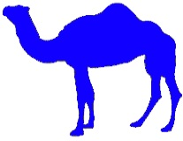

|  | Camelid comparison Approximate as of 6/2011 |
|||
|---|---|---|---|---|
| # of humps | Indigenous region | Spits? | Produces wool? | |
| Camels(bactrian) | 2 | Africa/Asia | Yes | Yes |
| Llamas | 1 | Andes Mountains | Yes | Yes |
Camels are mammals with long legs, a big-lipped snout and a humped back. There are two types of camels: dromedary camels, which have one hump, and Bactrian camels, which have two humps. Camels' humps consist of stored fat, which they can metabolize when food and water is scarce.